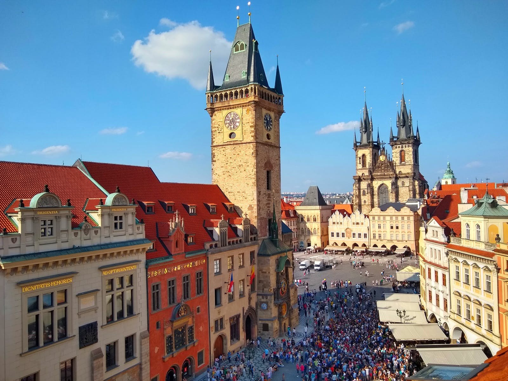

Praga słynie z ogromnego kompleksu zamkowego oraz niepowtarzalnego klimatu. Wyjątkowa architektura sprawia, że co roku miasto jest odwiedzane przez miliony turystów. Już przed wiekami Praga przyciągała najznamienitszych artystów zyskując sobie miano „Złotego Miasta” – symfonii piękna i elegancji. Spacerując po uliczkach Pragi nie należy się śpieszyć, gdyż są one pełne tajemniczych miejsc. Warto zobaczyć dzielnicę żydowską – Josefov, miejsce gdzie żył i tworzył słynny pisarz Franz Kafka, a także wybrać się na spacer słynnym Mostem Karola.
